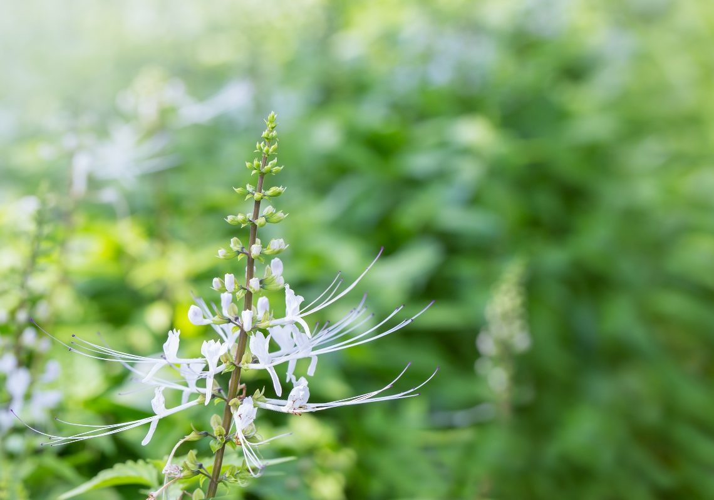

หญ้าหนวดแมว
ไม้ล้มลุกขนาดเล็กที่มีสรรพคุณไม่น้อย โดย "ราก" สามารถใช้ขับปัสสาวะได้ "ใบ" ใช้รักษาโรคไต ช่วยขับกรดยูริกออกจากไต รักษาโรคเบาหวาน อาการปวดหลัง ไขข้ออักเสบ ลดความดันโลหิต "ต้น" ก็ใช้แก้โรคไต ขับปัสสาวะได้เช่นกัน และยังช่วยรักษาโรคนิ่ว โรคเยื่อจมูกอักเสบได้ โดยนำต้นสด หรือต้นแห้ง หรือใบอ่อน หรือใบตากแห้ง ไปชงกับน้ำ 1 แก้ว ดื่มวันละ 3 ครั้งก่อนอาหาร ห้ามนำไปต้ม และไม่ควรใช้ใบแก่ หรือใบสด เพราะมีฤทธิ์กดหัวใจ ทำให้ใจสั่นและคลื่นไส้ได้
ข้อ ควรระวังก็คือ ผู้ที่เป็นโรคหัวใจ ไต ห้ามรับประทาน เพราะในหญ้าหนวดแมวมีโพแทสเซียมสูงมาก และไม่ควรรับประทานหญ้าหนวดแมวร่วมกับแอสไพริน เพราะจะยิ่งทำให้ยาจำพวกแอสไพรินไปจับกล้มเนื้อหัวใจมากขึ้น
การปลูกหญ้าหนวดแมว ปลูกได้ด้วย 2 วิธี คือ
การปักชำกิ่ง ตัดกิ่งที่ยังไม่ออกดอก ยาวประมาณ 15-20 เซนติเมตร จากนั้น เด็ดกิ่งแขนง และใบออกด้านโคนกิ่งออก ในความยาวประมาณ 5 เซ็นติเมตร พร้อมกับเด็ดยอดทิ้ง ก่อนนำมาปักชำ ซึ่งอาจปักชำในกระถางหรือปักชำลงแปลงปลูก
การหว่านเมล็ด นำเมล็ดหว่านลงแปลงที่เตรียมไว้ โดยหว่านให้เมล็ดมีระยะห่างกันประมาณ 3-5 เซนติเมตร ก่อนให้น้ำ ใส่ปุ๋ย และดูแลจนต้นกล้าอายุประมาณ 20-30 วัน หรือสูงประมาณ 10-15 เซนติเมตร ก่อนแยกปลูกลงแปลงต่อ
หมั่นรถน้ำ ดูแลกานพลูจนอายุ 12 เดือน (ต้นสูง 50 ซม.)
หญ้านวดแมว เป็นพืชที่ต้องการความชุ่มชื้นสูง หากขาดน้ำนาน ลำต้นจะเหี่ยว และตายได้รวดเร็ว ดังนั้น กล้าหญ้าหนวดแมวหรือต้นที่ปลูกในแปลง ควรมีการให้น้ำอย่างน้อย 2 วัน/ครั้ง
ทั้งต้น ใช้เป็นยาชงแทนใบชา กินขับปัสสาวะ ขับนิ่ว แก้โรคไต และกระเพาะปัสสาวะอักเสบ แก้ปวดเมื่อย และไขข้ออักเสบ ลดความดันโลหิต รักษาโรคเบาหวาน ลดน้ำ ขับกรดยูริกจากไต แก้หนองใน ราก ขับปัสสาวะ ทั้งต้น แก้โรคไต ขับปัสสาวะ รักษาโรคกระษัย รักษาโรคปวดตามสันหลัง และบั้นเอว รักษาโรคนิ่ว รักษาโรคเยื่อจมูกอักเสบ
ควรเก็บในที่สะอาด เย็น ไม่อับชื้น มีอากาศถ่ายเทได้ดีหรือเก็บในห้องเย็น เก็บในภาชนะที่ปิดสนิท